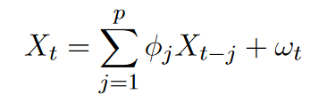
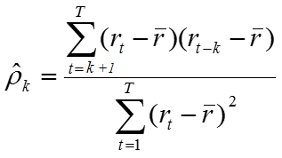
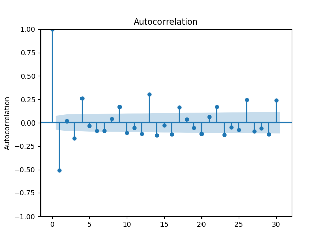
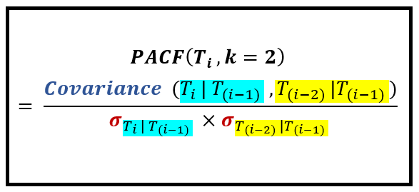
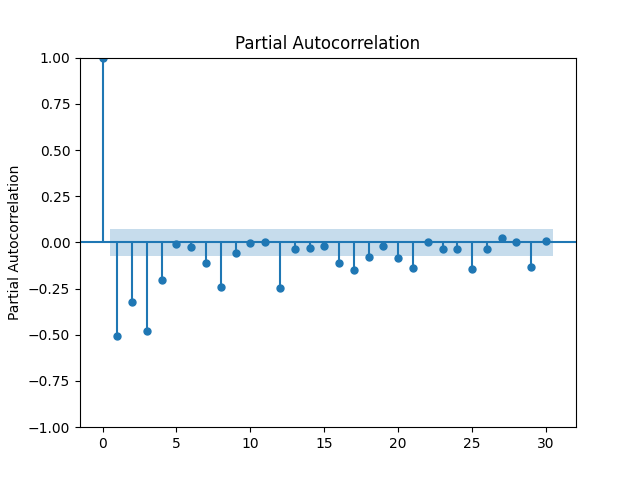
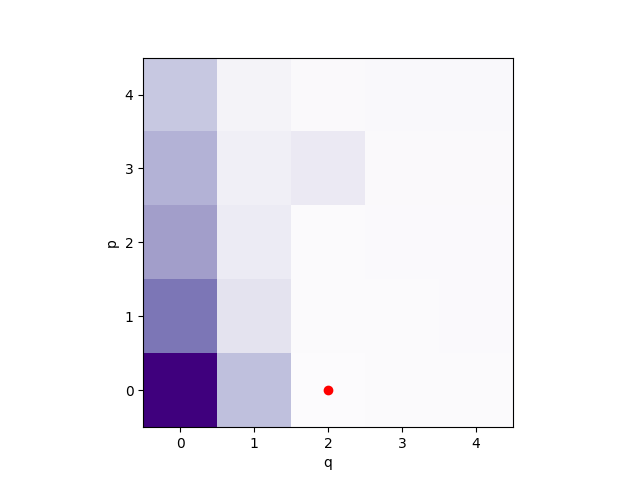
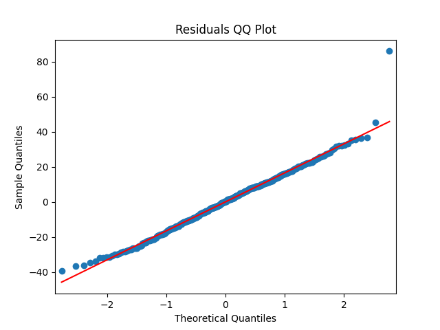

Table of Content
- Description of the Algorithm
- SARIMA
- Prompt Generation
- Conclusion
- References
Description of the Algorithm
In our project we have used algorithms in two parts.
For the first part, in this part We tried many different approaches to ML (Machine Learning) Models to achieve our goal. Finally, we used the SARIMA (Seasonal Autoregressive Integrated Moving Average) model, which is an extension of the ARIMA (Autoregressive Integrated Moving Average) model. In this part of our project is about forecasting the future carbon emission of data Volvo data resource groups, which have significant time correlation and some seasonal patterns, so using time series analysis is quite suitable for this case. The SARIMA model can predict future data by analyzing trends and seasonal cyclical patterns in the data and incorporating forecasting techniques. This model can capture seasonal patterns in the data to better predict future changes in the data.
For the second part, we chose to write a program to generate a set of rules for conditions to create the prompt that we can pass to OpenAI API to ask advice about how to reduce the carbon emission for certain servers in certain locations.
SARIMA
In this section I will explain what SARIMA is, what characteristics SARIMA has, how to choose the parameters of SARIMA model, and how to verify the accuracy of SARIMA, which is an ARIMA model with Stationarity characteristics. Then the ARIMA model is composed of two models, autoregressive (AR) and moving average (MA), and the difference (I) characteristic, and I will explain these three parts separately.
Before introducing this model, I would like to introduce what is time series analysis and the two characteristics that will be present in our model: Stationarity and Seasonality.
Time Series Analysis
Time series analysis is a technique used to analyze data collected over a predetermined period of time, as opposed to data that was acquired randomly or irregularly. This type of analysis is unique in that it enables researchers to examine how variables change over time, offering insightful information about the evolution of the data points and resulting outcomes. Accuracy and consistency are crucial in time series analysis, and it is particularly effective when there is a large amount of data available. Additionally, time series analysis is a helpful tool for planning and decision-making, as it can be used to predict future trends using historical data. [1]
Stationarity refers to the consistency of statistical properties in a time series over time, meaning that the shape of the series will persist in the future and its mean and variance will not significantly change. A stationary time series is a crucial requirement for predictive analysis as non-stationary time series tend to be unpredictable.

Seasonality
Seasonality refers to the recurring pattern in a time series that occurs over a particular season. For instance, the impact of Thanksgiving Day on turkey sales can be considered as a form of seasonality. In the context of SARIMA, seasonality refers to the repeated variation in data over a fixed time frame, such as a specific season of the year. SARIMA models are more accurate and effective in predicting time series data as they consider this seasonal pattern.
As I mentioned earlier, the SARIMA model is an extension of the ARIMA model that incorporates seasonality. On the other hand, the ARIMA model is used for non-seasonal time series data and consists of three components: autoregressive (AR), difference (I), and moving average (MA). The ARIMA model utilizes first-order or second-order differences of the data to minimize or remove the trend and seasonality of the time series, resulting in a stationary data series.
The SARIMA model has several parameters that need to be specified in order to build a model that fits the data well. These parameters are:
Ex. model = SARIMAX(train_data, order= (1, 2, 1), seasonal_order=(4, 2, 3,
7))
p: The order of the autoregression component. It is the number of lagged values used in the autoregressive model.
d: The order of the integration component. It is the number of times the data needs to be different in order to make it stationary.
q: The order of the moving average component. It is the number of lagged forecast errors used in the moving average model.
P: The order of the seasonal autoregression component. It is the number of lagged values used in the seasonal autoregressive model.
D: The order of the seasonal integration component. It is the number of times the seasonal data needs to be different in order to make it stationary.
Q: The order of the seasonal moving average component. It is the number of lagged forecast errors used in the seasonal moving average model.
m: The number of time steps in a single season period.
The role of the seasonal parameters (P, D, Q) and m parameter is to improve the predictive accuracy of the model by considering the seasonal correlation in the time series. In the SARIMA model, these seasonal and m parameters serve the same purpose as the three parameters of the ARIMA model (p, d, q), but only for seasonal data.
In the next 3 small sections I will describe each of these three components autoregressive (AR), moving average (MA), and difference (I).
Order of Differencing (I)
Differencing: used to calculate the difference of time series data between time nodes t1 and t.
First-order differencing addresses linear trends, it’s basically calculated the transformation di = ti – ti-1.
Second-order differencing addresses quadratic trends, in other words it’s calculating the difference of First-Order difference. It’s basically calculated the transformation of di = (ti – t i-1.) – (ti-1 – ti-2.), which is equivalent to the formula di = ti – 2ti-1 + ti-2. [2]
Differencing can be used to pre-process time series data to satisfy the requirement of stationary time series, which can then be analyzed and predicted using the analysis of stationary time series.

Autoregressive (AR) Model
Autoregression (AR) is a time series model that assumes that the current time series values are a combination of previous time series values; in other words, it uses the variable's own historical time data for predicting, it describes the correlation between the variable's present value and its past value.
Specifically, the AR(p) model can be expressed as the following equation:
X(t) = c + φ1 * X(t-1) + φ2 * X(t-2) + … + φp * X(t-p) + ε(t)
[3]
P here indicates a time span interval, e.g., 1 for today and yesterday, 2 for today and the day before. i indicates how many days of data are related to the previous days.
And c is a constant term, φ1, φ2, ..., φp are the coefficients of the AR model, X(t) is the current time series value, X(t-1), X(t-2), ..., X(t-p) are the past p time series values, and ε(t) is the error term, which is the random noise that cannot be explained by the model.
Moving average (MA) Model
Moving Average (MA) Model is a time series forecasting model. The model is based on the moving average in the time series (the values over successive time periods are summed separately and divided by the number of this value to obtain an average value) and aims to predict the value of the next time step.
By concentrating on the accumulation of large error values in the AR model, the MA model assumes that the errors in the series (i.e., the difference between the observed and true values) are white noise and tries to capture the effect of the moving average of these errors. The random fluctuations in the forecasts can be effectively removed using the moving average method. The value of the moving average prediction error is used in the MA model to determine the anticipated value (i.e., white noise).
Specifically, the MA (q) model can be expressed as the following equation:
[4]
yt is a data point on the time series. μ is a constant term of the model, representing the mean of the series. εt is a random error term, representing the error. θ is a coefficient indicating the degree of influence of the previous error on the current error.
Above we have described how this model is composed. Below we will describe a few functions on how to choose specific values of p and q.
Autocorrelation Function (ACF)
A function helps with choosing q-value.
Before we talk about the ACF function, let's talk about the correlation function. If the two variables change to the same extent, the correlation coefficient there is +1, if the opposite then the correlation coefficient is -1, if it is 0 means there is no correlation between the two, which is a measure of the indicator.

Autocorrelation Function (ACF) function is a statistic used to describe the autocorrelation of a time series, it is not a measure of two different de variables, but it is used to measure the relationship between two data points in the one single time series, that is, to calculate the correlation between yt and yt-1/y-2/…/yt-n.
The value of the ACF function ranges from -1 to 1. Like the correlation function, when the value of the ACF function is positive, it means that there is a positive correlation between the data points, when the value of the ACF function is negative, it means that there is a negative correlation between the data points, when the value of the ACF function is 0, it also means that there is no correlation between the data points.
The ACF equation is like this:
We will then draw a line graph of the ACF values with a 95% confidence interval and choose the q-value for the SARIMA model based on the relationship of the points falling into the confidence interval.
Partial Autocorrelation Function (PACF)
A function helps with choosing p-value.
The lagged k autocorrelation coefficient p(k) for a stationary AR(p) model is not only a straightforward correlation between y(t) and y. (t-k). In the ACF computation, y(t) is also impacted by k-1 variables y(t-1), y(t-2)... and because each of these k-1 variables is correlated with y(t-k), the autocorrelation coefficient p(k) is influenced by the effects of many other factors on both y(t) and y(t-k). But PACF will eliminate the effects of these k-1 random variables in the middle and directly calculate the effect of y(t-k) on y(t) (strictly the correlation between these two variables).
The ACF equation is like this:
[5]
We will then draw a line graph of the PACF values with a 95% confidence interval and choose the p-value for the SARIMA model based on the relationship of the points falling into the confidence interval.

Bayesian Information Criterion (BIC)
The two previously mentioned functions can help us to choose the values of p and q separately, but there may be more than one suitable value of p and q at the same time, and there is another function that can help us to choose the optimal p and q values.
The Bayesian Information Criterion (BIC) function is used to compare different models in statistical model selection. BIC is based on maximum likelihood estimation and considers the complexity of the model by applying a penalty term to the model.
For an ARIMA(p,d,q) model, the BIC is calculated as follows:
BIC = log(n) * (p + q + 1) - 2 * log(L)
Where n is the sample size of the time series data, p is the order of the AR model, q is the order of the MA model, and L is the maximum likelihood value of the model.
A smaller value of BIC indicates a better fit of the model. Therefore, when choosing the parameters p and q of the ARIMA model, the model with the smallest BIC value is usually chosen as the final model.
We can then draw a visual heat map based on the BIC values as follows.
Training and testing sets
Because of the limitations from the client, the only dataset we could access was the past month, which is 30 days, and we chose to use hours as the time span, and we had a total of 720 hours of dataset.
We read the data in dictionary format and convert it to Pandas DataFrame format, and then split the dataset into a training set containing the most recent 360 hours of data and a test set containing all the data except the training set.
The splitting of the training and test sets is based on time series. In time series forecasting, the training set should contain the most recent period because we want to predict future trends based on the most recent data. The test set should contain the rest of the data excluded from the training set to test the accuracy of the model on future data.
The specific implementation assigns the most recent 360 hours of data to the training set by using a slicing operation on the DataFrame, and assigns all data except for these 360 hours of data to the test set. The iloc method of DataFrame is used here to fetch the data of the penultimate 360 hours with negative index.
train_data = df[-360:]: This line of code takes the last 360 data points in
the dataset and uses them as the training set.’ -360:’ means the
penultimate 360 data points and: means all data points from that data point
to the end of the dataset. So, df[-360:] represents the subset containing
the last 360 data points.
test_data = df[:-360]: this line of code takes all but the last 360 data
points in the dataset as the test set. ‘:-360’ means all data points from
the beginning of the data set to the penultimate 360 data points before.
So, df[:-360] represents a subset of the data set except for the last 360
data points.
Residual Test
We choose to use the residual test to test our model and it will check the suitability of the model built.
The difference between the observed and predicted values, often referred to as the residual, which is the difference between the actual observed data (Observed values) and the data predicted by the model (Predicted values:) when we are using the SARIMA model to make the prediction.
Observed values: These are the actual, already recorded data points. In this example, the observed values are the actual data used to fit the model when training the SARIMA model.
Predicted values: These are the data points that the model predicts based
on the training data. In our project, the predicted values are generated
from the trained SARIMA model. When we fit the model using model_fit =
model.fit(), the model learns the underlying structure and characteristics
of the emissions based on the training data. Future emissions can then be
predicted using model_fit.forecast(steps=step).
These two predicted values are used to assess the performance of the model on unknown data.
In time series analysis and forecasting, residuals are often used to assess how well a model fits the data. It helps us to understand whether the model can capture the underlying structure and characteristics of the data.
Residuals Histogram
Typically (and it’s one of our methods of choice for evaluation), we choose to draw a histogram of the residuals, which are ideally random and normally distributed with a mean close to 0. This means that the model captures the key information in the data well, and that the random fluctuations in the residuals are mainly caused by noise.
Examples of Residuals Histogram are drawn:

Quantile-Quantile plot
The second method we choose is the QQ plot (also known as quantile-quantile plot.) QQ plots can be used to compare two probability distributions and are often used to test whether a data sample fits a particular theoretical distribution.
In our example, the QQ plot is used to test whether the distribution of the SARIMA model residuals is close to a normal distribution. If the residuals are close to a normal distribution, this means that the error of the model is random and not systematic, thus indicating that the model is valid.
By observing whether the points on the QQ plot are aligned along a straight line with a slope of 1 and an intercept of 0, we can assess the similarity of the residual distribution to the theoretical normal distribution.
Examples of QQ plot are drawn:
Suggestions to improve the performance
According to the above two figures, you can judge whether your own own model is suitable, if the model is not suitable, usually want to optimize the choice of SARIMA model is to choose more suitable parameters, such as from using ACF and PCAF method to use BIC method to choose parameters. Or pre-processing the data, processing the missing values such as filling the data backward, making more differences to make the data more stationary, or adjusting the threshold of seasonality judgment to a smaller value so that the seasonality can be better judged and the seasonality of the data can be captured more easily, or adjusting the threshold of seasonality judgment to a higher value so that the seasonality can be better judged so that the wrong capturing the seasonality of the data. In our case, we found that the results of using the ACF and PACF methods to obtain the parameters were not satisfactory, so we chose to use the BIC method to obtain the best p,q values, which made our residual normality test perform better.
Prompt Generation
This section will explain how we will generate a prompt to provide advice on reducing carbon emissions for different types of advice (AdviceType), and we will pass the prompt to the OpenAI API to ask for advice. The whole process of prompt generation is divided into the following steps.
Our code defines a function called get_prompt that takes two arguments: a
list called resource_emission_infos that contains an object of type
ResourceEmissionInfo, a class called ResourceEmissionInfo. The structure of
this class contains the following properties:
resource: An object of type GenericResource, representing a generic
resource, such as a server.
past_weeks_emissions: integer of type past_weeks_emissions, representing
the carbon emissions of the past week.
power_consumption_breakdown: dictionary type, representing the distribution
of power consumption in different regions. This is fetched from the
external Electricity Maps API. The values returned from this API are in
grams of CO2(eq) per KWh per power emissions type (for example, oil
produces 213gCO2eq/kWh). We need it as a percentage of total emissions. The
data is reprocessed to form a dictionary of power types and the percentage
they contribute to overall emissions. E.g.: oil: 31%.
fossil_free_percentage: integer type indicating the percentage of fossil
fuel-free energy use.
renewable_percentage: integer type indicating the percentage of renewable
energy used.
This class describes information about a resource's carbon emissions,
including the resource itself, its carbon emissions over the past week, and
its power consumption distribution. This information can be used to analyze
the environmental impact of the resource, as well as to provide
recommendations for the resource based on different recommendation types.
In the get_prompt function, a list containing ResourceEmissionInfo objects and advice_type is used as input, and then an advice request is generated for those resources.
First, the function defines a string named intro to indicate the beginning
of the output string. Next, an empty list named server_info_prompts are
created to store information about each server.
Next, a for loop is used to iterate over each resource_emission_info object
in the resource_emission_infos list. In the loop, the relevant information
is first extracted from the resource_emission_info object, such as the
resource name, current carbon emissions, and power consumption
distribution. Then, an advice request is constructed for that server based
on the value of advice_type.
At the end of the loop, a string named request_advice_prompt is defined for
requesting specific advice based on the value of advice_type. Finally,
intro, server_info_prompts and request_advice_prompt is concatenated
together and used as the return value of the function.
In this function, depending on the value of advice_type, the generated
advice requests may involve changing the energy type, changing the server
location, changing the resource configuration or changing the cooling type.
This makes our function highly reusable in different scenarios.
The generated prompt will be passed to the OpenAI API to ask for advice
Our function customizes the prompt based on the input data provided and the AdviceType to provide targeted advice for different situations to help reduce carbon emissions.

Conclusion
After we tried the SARIMA model, we found that indeed this model is very suitable for our project to be able to generate suitable future data forecasts, especially when we do not have much information about the data obtained, only two data, time and numerical. Secondly, regarding the comparison between the parameters of p and q that we tried to find with the combination of ACF and PACF respectively and the parameters of p and q using the BIC function, by substituting the parameters into the model, we found that the model calculated by the BIC function seems to be a little more suitable in terms of selection. In fact, if it is said that the dataset can have more information (information that has real meaning and impact on carbon emissions) rather than just time, we think it would be more appropriate to use a machine learning model like the LSTM model. As well as regarding the generation of carbon emission reduction recommendations, if a larger dataset would also allow us to use machine learning models to generate recommendations instead of the existing methods.
References
- 1. Tableau.com, “Time Series Analysis: Definition, Types, Techniques, and When It's Used” [Online] Available at: http://www.tableau.com/learn/articles/time-series-analysis
- 2. Real-Statics.com, “ARIMA Differencing “[Online] Available at:https://real-statistics.com/time-series-analysis/arima-processes/arima-differencing/
- 3. En.wikipedia.org,(2023) [Online] Available at: https://en.wikipedia.org/wiki/Autoregressive_model
- 4. En.wikipedia.org,(2023) [Online] Available at: https://en.wikipedia.org/wiki/Moving-average_model
- 5. Timeseriesoning.com, “Understanding Partial Auto-correlation And The PACF” [Online] Available at: https://timeseriesreasoning.com/contents/partial-auto-correlation/